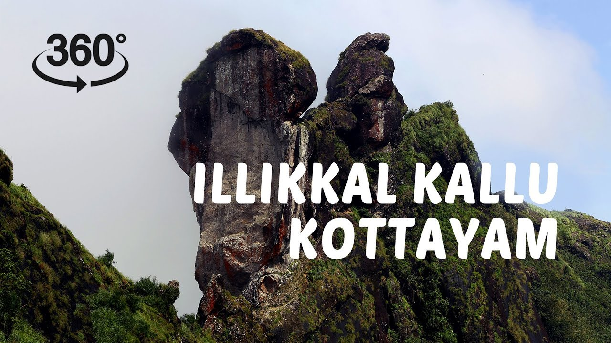

Wander Diaries: My Kerala Adventures
Traveling is my way of exploring the world, meeting people, and experiencing nature in all its glory. In this blog, I share my journeys across Kerala, visiting hidden gems and spontaneous spots that left unforgettable memories.
Escape to Ilikkal
Illikal felt like a secret tucked away in the hills of Kerala. From the moment I arrived, the lush greenery, cool breeze, and gentle hills made me feel completely relaxed. I spent my mornings walking along trails, listening to the streams and chirping birds. The soft mist over the hills gave everything a magical touch.
One highlight was finding a hidden waterfall. Sitting by the water, I watched the sunlight dance on the ripples and felt at peace. I also tried local snacks from a tiny village shop, which were both delicious and authentic. In the evenings, the sky transformed into shades of orange and pink as the sun set behind the hills — a perfect end to a serene day.

Discovering Achumala: Village Life Near Adoor
Achumala, a quaint village near Parakode in Adoor, was a delightful change of pace. The calm rivers, small temples, and green fields gave me a glimpse of authentic rural Kerala life. I explored local streets, interacted with friendly villagers, and even watched farmers tending to paddy fields. Every corner seemed peaceful and timeless.
A walk along the riverside was particularly memorable. The gentle flow of water, coupled with the sounds of birds and rustling leaves, made it a perfect escape. I also got to try some homemade Kerala sweets prepared by villagers, which was a heartwarming experience. Achumala reminded me how simple moments can leave the deepest impressions.

Wandering Through Hidden Corners
During my travels, I also explored several random spots that weren’t on any map. Some were quiet hilltops with breathtaking views, others were lively village festivals filled with music, dance, and local delicacies. Each place had its own charm and stories to tell.
I learned that the joy of travel doesn’t always come from famous landmarks — sometimes, it’s in the unexpected detours, the conversations with locals, or the sunsets from a hill you stumbled upon. These spontaneous adventures made my trip truly unforgettable and taught me to embrace curiosity and exploration.